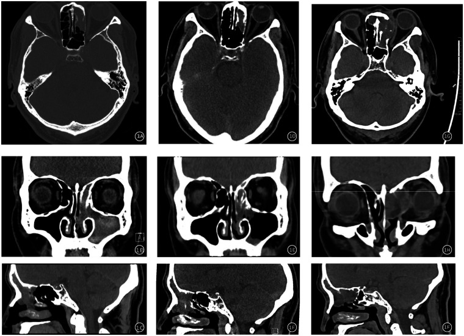
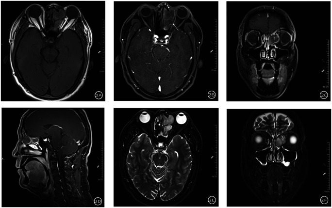
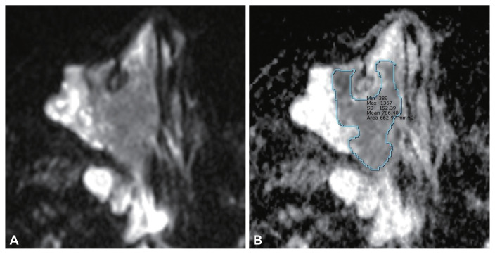

6164 — U nhú đảo ngược tái phát sau mổ: tái phát thật, nang nhầy hay sẹo xơ / Recurrent sinonasal inverted papilloma: recurrence, mucocele or scar
Tags: pattern:tai-phat pattern:khoi-xoang pattern:nang-nhay pattern:cerebriform pattern:day-xuong vung:xoang vung:mui score:Krouse protocol:MRI-xoang protocol:CT-xoang protocol:noi-soi-xoang
Mức chắc chắn (certainty): tổng hợp y văn (literature synthesis) — ghép 1 ca tái phát bị nang nhầy che, chẩn đoán trượt trên CT/MRI 4 mm và chỉ xác nhận khi mổ (Front Allergy 2026, PMC13349747, CC BY), 1 loạt 30 ca so u nhú đảo ngược với ung thư biểu mô vảy trên nền u nhú (ADC, T2, mẫu hình cuộn não) (J Rhinol 2026, PMC13065420, CC BY-NC), 1 loạt 16 ca đối chiếu CT – mô học (Diagnostics 2025, PMC12248862, CC BY) và bài nền 3066 của repo. Không có thử nghiệm ngẫu nhiên về lịch theo dõi.
Câu chốt: sau mổ u nhú đảo ngược, khối mô mềm mới không tự động là tái phát, và nang nhầy không tự động là "lành". Ba khả năng — tái phát thật, nang nhầy/bít lỗ thông và sẹo xơ – mô hạt — chồng lấp trên hình ảnh; nang nhầy có thể nằm TRƯỚC u tái phát và che nó, nên chỉ đọc túi dịch rồi kết luận là bỏ sót u. Ngược lại, gọi mọi nốt ngấm thuốc sau mổ là tái phát dẫn tới mổ lại lần hai trên mô đã xơ — khó hơn nhiều và dễ làm hẹp lỗ thông hơn nữa. Chốt hạ: MRI lát mỏng ≤ 1–2 mm + soi nội soi + sinh thiết thành nang khi còn nghi ngờ, không dựa vào một chuỗi xung.
1. Tổng quan bệnh học – cơ chế hình ảnh (TẠI SAO)
1.1 Vì sao u nhú đảo ngược hay tái phát
- Dịch tễ: u nhú đảo ngược xoang mũi (sinonasal inverted papilloma, SNIP) chiếm 0,4–7% u xoang mũi, tỷ lệ mắc 0,2–1,5/100.000/năm; nam nhiều hơn nữ, tuổi hay gặp 50–60 (PMC13349747, PMC12248862).
- Bản chất: u lành tính về mô học nhưng xâm lấn tại chỗ, mọc theo niêm mạc Schneiderian, đảo ngược biểu mô vào lớp đệm (không phải "đảo ngược" vị trí giải phẫu). Vì vậy chân bám là trung tâm của bệnh: không lấy hết chân bám và không mài xương dưới chân bám thì u mọc lại từ chính chỗ đó.
- Tái phát: y văn ghi 0–78% tùy loạt (cao ở mổ nội soi "bóc khối" không xử lý chân bám, theo dõi ngắn); các tổng quan hiện đại nêu 2–15% (PMC13349747, PMC12248862). Trong repo, bài 3066 ghi tái phát 19%, giảm còn 4,2% khi mổ định hướng chân bám.
- Vị trí nguy cơ: xoang trán và thành trong xoang hàm tái phát nhiều hơn; Krouse T3 (tổn thương xoang trán hoặc xoang bướm) có nguy cơ cao hơn hẳn T1–T2 (PMC13349747).
- Chuyển dạng ác tính: 6–15% (một số tổng quan 7–10%), chủ yếu thành ung thư biểu mô vảy (SCC); SCC đồng thời 7,1%, dị thời 3,6% (PMC12248862).
1.2 TẠI SAO mỗi chuỗi xung nói một câu khác nhau
- T2 — "mẫu hình cuộn não" (convoluted cerebriform pattern, CCP): u mọc thành nếp gấp của biểu mô và mô đệm xen kẽ vách xơ mỏng. Trên T2, biểu mô/đệm giàu nước sáng xen vách xơ tối → các dải sáng–tối lượn sóng giống bề mặt não. Đây là dấu hiệu đặc trưng nhưng không tuyệt đối: cùng mẫu hình xuất hiện ở SCC trên nền u nhú, và mất CCP chỉ gặp 53,3% ở nhóm ác tính vs 20% ở nhóm lành — không có ý nghĩa thống kê (p = 0,128) (PMC13065420). Vì vậy: có CCP không loại trừ ung thư; mất CCP không chứng minh ung thư.
- T1 và T1 sau tiêm: u đồng hoặc giảm tín hiệu so với niêm mạc vì đặc, ít mỡ, ít máu; ngấm thuốc không đồng nhất theo các dải cuộn. Tín hiệu trung gian trên T2 và trên T1 sau tiêm gặp nhiều hơn ở nhóm SCC (80% vs 40%, p = 0,025; 73,3% vs 26,7%, p = 0,029) — tức mất tính "sáng–tối rõ" của CCP mới là điều đáng lo.
- DWI/ADC: SCC tăng mật độ tế bào → hạn chế khuếch tán → ADC thấp hơn. Trung vị ADC 0,99 × 10⁻³ mm²/s ở SCC trên nền u nhú so với 1,20 × 10⁻³ mm²/s ở u nhú lành (p = 0,026), có chồng lấp (khoảng 0,68–1,30 vs 0,88–1,73) (PMC13065420). ADC là gợi ý, không phải chốt.
- CT — vì sao vẫn cần dù đã có MRI: CT là phương tiện tốt nhất để thấy xương. Hai dấu hiệu định vị chân bám: dày xương khu trú (focal hyperostosis) và mài mòn/khuyết xương tại nơi u bám — giúp lập kế hoạch mài xương và là bản đồ cho lần mổ lại. CT cũng phân biệt mờ xương do u với mờ do viêm xoang kèm.
- TẠI SAO nang nhầy che được u: sau mổ, lỗ thông xoang trán/xoang bướm bị hẹp hoặc dính → niêm mạc còn lại tiết nhầy nhưng không thoát được → nang nhầy căng, tăng tín hiệu T2 rất mạnh, ngấm thuốc chỉ ở viền, đè xẹp các cấu trúc lân cận. Trên ảnh, túi dịch chiếm hết xoang, còn u nhỏ ở lỗ thông bị đẩy ra rìa và "biến mất" nếu lát cắt dày. Ca PMC13349747 dùng MRI 4 mm và không thấy u; chỉ mổ + sinh thiết thành nang mới phát hiện SNIP ở lỗ thông xoang trán.
1.3 Ngưỡng định lượng nằm lòng
| Đại lượng | Số liệu | Nguồn |
|---|---|---|
| SNIP trong u xoang mũi | 0,4–7% | PMC13349747, PMC12248862 |
| Tỷ lệ mắc | 0,2–1,5/100.000/năm | PMC13349747 |
| Tuổi hay gặp | 50–60 | PMC12248862 |
| Tái phát | 0–78% (loạt) · 2–15% (tổng quan) · 19% (repo, bài 3066) | PMC13349747, PMC12248862, bài 3066 |
| Tái phát sau mổ định hướng chân bám | 4,2% | bài 3066 |
| Chuyển dạng ác tính | 6–15% (7–10%) | PMC13349747, PMC12248862 |
| SCC đồng thời / dị thời | 7,1% / 3,6% | PMC12248862 |
| ADC: SNIP lành vs SNIP + SCC | 1,20 vs 0,99 × 10⁻³ mm²/s, p = 0,026 | PMC13065420 |
| T2 tín hiệu trung gian: lành vs ác | 40% vs 80%, p = 0,025 | PMC13065420 |
| T1 sau tiêm trung gian: lành vs ác | 26,7% vs 73,3%, p = 0,029 | PMC13065420 |
| Mất CCP: lành vs ác | 20% vs 53,3%, p = 0,128 (không ý nghĩa) | PMC13065420 |
| Thể tích u: lành vs ác | không khác biệt có ý nghĩa | PMC13065420 |
| Ca minh họa: thời gian từ mổ đến phát hiện tái phát | ≈ 2 năm (2023 → 2025) | PMC13349747 |
| Ca minh họa: độ dày lát cắt MRI đã bỏ sót | 4 mm | PMC13349747 |
| Ca minh họa: theo dõi sau mổ lại | 1 năm, không tái phát | PMC13349747 |

Hình 1 — Mẫu hình cuộn não (CCP): (A) T2 coronal và (B) T1 sau tiêm coronal của u nhú đảo ngược có dải sáng–tối lượn sóng xen kẽ; (C–D) ca khác với CCP rõ. Đây là dấu hiệu đặc trưng nhưng không dùng một mình để loại ung thư. Nguồn: J Rhinol 2026 (PMC13065420), CC BY-NC 4.0.
2. Mẫu hình + chẩn đoán phân biệt theo vị trí (Gamut)
Mẫu hình chung: bệnh nhân đã mổ SNIP, đến khám vì nghẹt mũi tái diễn, chảy mũi một bên, đau mặt/đau hốc mắt, hoặc chảy máu; nội soi thấy khối mô mềm hoặc niêm mạc phù nề quanh lỗ thông đã hẹp. Câu hỏi hình ảnh: khối này là u, dịch, hay sẹo — và nếu là u thì đã xâm lấn đâu?
- Theo vị trí (quyết định cả nguy cơ tái phát và đường mổ):
- Xoang trán/lỗ thông trán → tái phát cao, dễ bị nang nhầy che, cần Draf IIb/III và mài xương (ca PMC13349747).
- Thành trong xoang hàm → tái phát cao; phải cắt thành trong + mài xương chứ không chỉ bóc niêm mạc.
- Mảnh khứu/trần sàng → nguy cơ lan nội sọ, cần đánh giá màng não/ống sàng trên MRI.
- Xoang bướm → nguy cơ xâm lấn động mạch cảnh, thần kinh thị, hốc mắt; đây là Krouse T3.
- Vách mũi → thể hai bên hiếm, dễ bỏ sót bên đối diện.
- Gamut "khối mô mềm trong xoang ở người đã mổ": tái phát SNIP · nang nhầy/bít lỗ thông · mô hạt – sẹo xơ · viêm xoang – polyp · u nhú mới ở vị trí khác · SCC trên nền SNIP · u khác (schwannoma, lymphoma, sarcoma) · dị vật/gạc cầm máu còn lại.
- Gamut "khối có vôi hóa/tiêu xương xoang": nấm xoang (mycetoma) · SCC · u nhú đảo ngược có hyperostosis · u xương sụn · chondrosarcoma · di căn.
3. Bảng so sánh phân biệt (ma trận đối chiếu)
| Thực thể (entity) | Hình ảnh điển hình (CT / MRI) | Chốt vào (rule-in) | Chốt loại (rule-out) | Gợi ý xác nhận |
|---|---|---|---|---|
| Tái phát SNIP | Khối mô mềm bám vào vị trí chân bám cũ, dày xương khu trú dưới chân bám; T2 CCP, ngấm thuốc theo dải | Khối đặc + CCP + dày xương tại chân bám + ngấm thuốc đặc | Túi dịch thuần, không có phần đặc ngấm thuốc → không phải tái phát đơn thuần | Nội soi + sinh thiết; MRI ≤ 1–2 mm |
| Nang nhầy | Tăng T2 rất mạnh, đồng nhất, viền ngấm thuốc mỏng, giãn xoang, mỏng/vỡ xương, không có phần đặc | Túi dịch căng + viền mỏng + không phần đặc | Có nốt đặc ngấm thuốc ở thành/lỗ thông → phải loại tái phát ẩn | Sinh thiết thành nang khi mổ |
| Sẹo xơ – mô hạt sau mổ | T2 giảm, ngấm thuốc đều, không cuộn não, không dày xương mới, co kéo | Mô xơ co kéo, không hiệu ứng khối, không dày xương | Hiệu ứng khối + CCP + dày xương → nghi tái phát | So phim cũ; MRI định kỳ |
| Polyp/viêm xoang | Mờ niêm mạc đối xứng, tăng T2 dạng nang, ngấm thuốc dải niêm mạc, cuống khe giữa | Mờ niêm mạc hai bên, không phá xương | Khối đặc một bên + phá/dày xương khu trú | Điều trị nội khoa rồi chụp lại |
| SCC trên nền SNIP | Phần đặc tín hiệu trung gian trên T2/T1 sau tiêm, ADC thấp, tiêu xương, xâm lấn hốc mắt/nội sọ, hoại tử | ADC < 1,0 × 10⁻³ mm²/s + tiêu xương + xâm lấn ngoài xoang | ADC cao + không tiêu xương + CCP điển hình giảm khả năng, không loại trừ | Sinh thiết nhiều điểm; PET/CT |
| Mảnh xương bịt (mài xương cũ) | Dày xương cục bộ không có mô mềm, bờ nhẵn | Chỉ xương, không mô mềm | Có mô mềm quanh xương dày → nghi tái phát | CT xương lát mỏng; so phim mổ |
| Gạc/dị vật còn lại | Tổn thương có khí/bóng hơi nhỏ, hình thái theo vật liệu, không ngấm thuốc | Bóng khí trong khối + tiền sử mổ gần | Khối đặc ngấm thuốc | Hỏi bệnh sử; nội soi |
4. Protocol chụp + phân độ và lịch theo dõi
MRI là phương tiện chính để phân định "đặc vs dịch vs sẹo" — CT một mình không đủ khi đã có nang nhầy.
- MRI xoang mũi: lát ≤ 1–2 mm (ca PMC13349747 dùng 4 mm và bỏ sót u), T2 fat-sat, T1 trước và sau tiêm fat-sat (3 mặt phẳng), DWI + ADC, cân nhắc DCE (SCC có kiểu washout) (PMC12248862).
- CT xoang không cản quang, lát ≤ 1 mm, tái tạo xương: dùng để định vị chân bám, đánh giá dày xương/tiêu xương, lập kế hoạch mài xương và chọn đường mổ (Draf, medial maxillectomy).
- Nội soi là chuẩn theo dõi đầu tay; hình ảnh là bổ trợ (PMC13349747).
- Lịch theo dõi: chưa có lịch thống nhất trong y văn. Thực hành hợp lý: nội soi + hình ảnh nền sau mổ 3–6 tháng, sau đó nội soi định kỳ (vì đa số tái phát phát hiện bằng nội soi); chụp lại MRI lát mỏng ngay khi có triệu chứng, khối mới, hoặc nội soi không giải thích được. Ca PMC13349747 không theo dõi định kỳ và tái phát được phát hiện sau ≈ 2 năm — đây là lý do phải có lịch, không phải bằng chứng cho một lịch cụ thể.
- Khi mổ lại: lấy toàn bộ chân bám, mài và đốt xương dưới chân bám, mở rộng lỗ thông (ca PMC13349747 làm Draf IIb) và gửi thành nang + mô quanh lỗ thông đi xét nghiệm nếu nghi tái phát ẩn.
Krouse (phân độ dùng để dự báo tái phát):
| Độ | Phạm vi | Ý nghĩa thực hành |
|---|---|---|
| T1 | Chỉ trong hốc mũi, không phá xương | Mổ nội soi, tiên lượng tốt |
| T2 | Sàng và/hoặc phần trong xoang hàm | Cần cắt thành trong xoang hàm |
| T3 | Xoang trán và/hoặc xoang bướm, hoặc thành sau–bên xoang hàm | Nguy cơ tái phát cao — cần đường mở rộng, mài xương |
| T4 | Lan ngoài xoang mũi (hốc mắt, nền sọ, nội sọ) hoặc ác tính | Hội chẩn đa chuyên khoa; nguy cơ SCC |
flowchart TD
A["Sau mổ u nhú đảo ngược: khối mới hoặc triệu chứng tái diễn"] --> B["Nội soi + MRI xoang lát 1-2 mm + CT xương"]
B --> C{"Có phần đặc ngấm thuốc?"}
C -->|"Không: chỉ túi dịch viền mỏng"| D["Nghĩ nang nhầy hoặc bít lỗ thông"]
D --> E["Mở rộng lỗ thông + sinh thiết thành nang"]
C -->|"Có"| F{"T2 có cuộn não và dày xương tại chân bám?"}
F -->|"Có"| G["Nghĩ tái phát SNIP - mổ lại lấy chân bám + mài xương"]
F -->|"Không, tín hiệu trung gian + ADC thấp"| H["Nghi SCC trên nền SNIP"]
H --> I["Sinh thiết nhiều điểm + PET/CT + hội chẩn"]
G --> J["Theo dõi nội soi + MRI nền sau mổ"]
E --> J
5. Biến thể bình thường và cạm bẫy
- Nang nhầy "sạch" vẫn có thể che u: đây là cạm bẫy chính của bài — túi dịch không loại trừ tái phát; phải soi và sinh thiết thành nang ở bệnh nhân nguy cơ cao (xoang trán, Krouse T3, mổ trước không xử lý chân bám).
- Mô hạt sau mổ ngấm thuốc trong 3–6 tháng đầu — đừng gọi tái phát nếu không có hiệu ứng khối, không cuộn não, không dày xương mới.
- Dày xương do viêm xoang kèm (osteitis) có thể bắt chước hyperostosis của chân bám; đối chiếu với vị trí mô mềm và phim trước mổ.
- Lát cắt dày > 2 mm làm mất dải cuộn não và bỏ sót u nhỏ ở lỗ thông — luôn yêu cầu lát mỏng, đa mặt phẳng.
- CCP không phải dấu hiệu loại trừ ung thư (p = 0,128 khi so mất CCP); ADC chồng lấp giữa hai nhóm; không được sinh thiết bỏ qua vì "ADC cao".
- Sau mổ lại, giải phẫu đã thay đổi: lỗ thông hẹp, sẹo co kéo, mảnh xương mài — so phim cũ là bắt buộc, không đọc "khối" trên một phim đơn độc.
- Bỏ sót bên đối diện ở thể hai bên: luôn đọc cả hai hốc mũi dù triệu chứng một bên.
6. Tự lượng giá — Blind Quiz
Ca 1 — nam 56 tuổi, mổ nội soi xoang vì u nhú đảo ngược xoang trán (Krouse T3) cách đây 2 năm; nay đau hốc mắt trái tăng dần, không theo dõi định kỳ

- Gợi ý lâm sàng: không sốt, thị lực 0,8 hai mắt, không lồi mắt; nội soi thấy khối nhẵn có dịch mủ ở khe giữa trái.
- Câu hỏi: (1) Mô tả tổn thương ở hàng dưới (2025) và so với 2020/2023? (2) Vì sao hình ảnh này dễ bị gọi là nang nhầy lành? (3) Bước tiếp theo cần làm gì để không bỏ sót u?
Bấm để hiện đáp án (findings + chẩn đoán)
- Dấu hiệu (findings): hàng trên (axial 2020, 2023, 2025) và hai hàng dưới (coronal, sagittal) — 2020/2023: khối mô mềm một bên lấp xoang hàm, sàng trước, trán trái; 2025: tổn thương dạng nang giãn rộng, đậm độ thấp, mỏng và khuyết khu trú thành trong hốc mắt trái, đè cơ trực trong.
- Chẩn đoán: nang nhầy xoang trán–sàng trái che một u nhú đảo ngược tái phát; u thật nằm ở lỗ thông xoang trán và chỉ thấy khi mổ; giải phẫu bệnh: SNIP, loạn sản nhẹ khu trú.
- Vì sao: lỗ thông bị hẹp sau mổ → nhầy ứ → túi dịch căng chiếm hết xoang, u nhỏ ở lỗ thông bị đẩy ra rìa; trên CT chỉ thấy hình ảnh nang nhầy điển hình.
- Phản biện: ca này MRI 4 mm không thấy u — không phải bằng chứng "MRI vô dụng", mà là bằng chứng lát dày bỏ sót tổn thương nhỏ; tác giả khuyến nghị MRI lát ≤ 1–2 mm khi nghi ngờ.
- Nguồn ảnh: Front Allergy 2026;7:1877618 (PMC13349747), CC BY 4.0.
Ca 2 — cùng bệnh nhân, MRI 3.0 T trước mổ lần hai

- Câu hỏi: (1) Tín hiệu của tổn thương trên T1, T1 sau tiêm, T2 fat-sat? (2) Có phần đặc ngấm thuốc không? (3) Vì sao không thể kết luận "chỉ là nang nhầy"?
Bấm để hiện đáp án (findings + chẩn đoán)
- Dấu hiệu (findings): tổn thương đồng tín hiệu trên T1, viền ngấm thuốc, tăng tín hiệu mạnh trên T2 fat-sat, giãn xoang trán–sàng, mỏng/khuyết thành trong hốc mắt, đè cơ trực trong; không thấy rõ phần đặc cuộn não trên các lát 4 mm.
- Chẩn đoán: hình ảnh phù hợp nang nhầy, nhưng không loại trừ u ẩn ở lỗ thông — đúng như diễn tiến lâm sàng.
- Vì sao: nang nhầy tăng T2 rất mạnh, viền mỏng, còn u đặc, ngấm thuốc theo dải; nhưng khi u nhỏ và nằm sát xương/lỗ thông, lát dày + hiệu ứng thể tích làm nó hòa vào viền.
- Phản biện: đây là 1 ca; không thể suy ra "mọi nang nhầy sau mổ SNIP đều có u ẩn" — nhưng đủ để đổi thái độ: ở bệnh nhân Krouse T3, mổ trước không xử lý chân bám, không theo dõi, nang nhầy mới phải được soi + sinh thiết thành.
- Nguồn ảnh: Front Allergy 2026;7:1877618 (PMC13349747), CC BY 4.0.
Ca 3 — bệnh nhân có khối đặc một bên xoang hàm, không tiêu xương trên CT; cần phân biệt u nhú đảo ngược với SCC trên nền u nhú

- Câu hỏi: (1) Panel A và B là chuỗi gì? (2) ADC đo được 0,786 × 10⁻³ mm²/s gợi ý gì? (3) Có nên kết luận ung thư chỉ dựa vào ADC?
Bấm để hiện đáp án (findings + chẩn đoán)
- Dấu hiệu (findings): panel A DWI — khối tăng tín hiệu; panel B bản đồ ADC — ROI đặt trong phần đặc cho ADC trung bình 0,786 × 10⁻³ mm²/s (min 0,389; max 1,307), diện tích ROI 88,57 mm².
- Chẩn đoán: ADC thấp ủng hộ mô đặc, mật độ tế bào cao — trong bối cảnh này nghi SCC trên nền u nhú.
- Vì sao: tăng mật độ tế bào làm giảm khoảng ngoại bào → hạn chế khuếch tán → ADC thấp; trung vị ADC ở nhóm SCC là 0,99 so với 1,20 × 10⁻³ mm²/s ở u lành.
- Phản biện: khoảng ADC chồng lấp (0,68–1,30 vs 0,88–1,73) và cỡ mẫu 30 ca → ADC không đủ để chẩn đoán; đây là ca minh họa cách đo, không phải ca chứng minh. Chốt vẫn là sinh thiết.
- Nguồn ảnh: J Rhinol 2026;33:e2025.00062 (PMC13065420), CC BY-NC 4.0.
Bài liên quan chéo
- 3066 — U nhú đảo ngược mũi xoang: chẩn đoán, phân độ Krouse và mổ định hướng chân bám
- 715 — Nấm xoang (mycetoma) & viêm xoang do nấm
- 710 — Giải phẫu xoang mũi trên CT
- 3051 — Máu tụ tổ chức hóa xoang bướm
- 1713 — Cholesteatoma xương đá ở trẻ
Ảnh
images/6164_ip-recur-CT_PMC13349747-f1.jpg— CT chuỗi thời gian 2020/2023/2025 (CC BY 4.0).images/6164_ip-recur_MRI_PMC13349747-f2.jpg— MRI trước mổ lại (CC BY 4.0).images/6164_ip_CCP-MRI_PMC13065420-f5.jpg— mẫu hình cuộn não trên T2/T1 sau tiêm (CC BY-NC 4.0).images/6164_ip_ADC-DWI_PMC13065420-f4.jpg— DWI/ADC và cách đo ROI (CC BY-NC 4.0).- Nguồn, giấy phép và phái sinh từng ảnh:
images/CREDITS.md; link gốc:sources.md.
Không dùng để chẩn đoán độc lập khi chưa có người hướng dẫn.